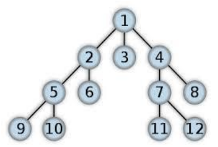

 Cây là một tập hợp các phần tử liên kết với nhau qua quan hệ cha con. Một nút cha có thể có nhiều nút con, nhưng một nút con chỉ có duy nhất một nút cha. Trong cây có một nút không có nút cha, nút này được gọi là nút gốc. Một nút được gọi là nút lá nếu nó không có nút con nào. Cây có N nút thì sẽ có N-1 cung cha-con.
Chiều cao của một cây được tính bằng khoảng cách dài nhất từ nút gốc đến một nút lá nào đó, cộng thêm 1. Trong ví dụ bên, chiều cao của cây là 4.
Ta định nghĩa C[v] là số lượng nút con của một nút v. Trong ví dụ trên, C = {3, 2, 0, 2, 2, 0, 2, 0, 0, 0, 0, 0}.
Cho trước một mảng C, ta không đủ thông tin để khôi phục lại chính xác cây ban đầu. Tuy nhiên, ta có để xác định chiều cao bé nhất và chiều cao lớn nhất trong các cây có thể khôi phục được. Bạn hãy tính các giá trị bé nhất và lớn nhất này.
Dữ liệu nhập:
- Dòng đầu tiên là số nguyên N, số lượng nút trong cây (1 ≤ n ≤ 100)
- Dòng thứ hai là N số nguyên không âm của mảng C. Dữ liệu cho đảm bảo tổng các số của C bằng N-1.
Dữ liệu xuất:
- Là chiều cao bé nhất và chiều cao lớn nhất trong các cây có thể khôi phục lại được. Hai số cách nhau một khoảng trắng.